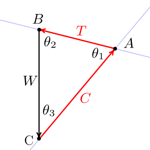
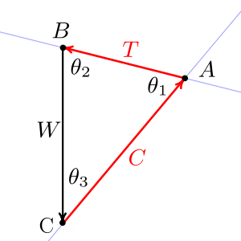

Section 3.4 Particles in Two Dimensions
Subsection 3.4.1 Introduction
In this section we will study situations where everything of importance occurs in a 2-dimensional plane and the third dimension is not involved. Studying two-dimensional problems is worthwhile, because they illustrate all the important principles of engineering statics while being easier to visualize and less mathematically complex.
We will normally work in the “plane of the page,” that is, a two-dimensional Cartesian plane with a horizontal \(x\) axis and a vertical \(y\) axis discussed in Section 2.3 previously. This coordinate system can represent either the front, side, or top view of a system as appropriate. In some problems it may be worthwhile to rotate the coordinate system, that is, to establish a coordinate system where the \(x\) and \(y\) axes are not horizontal and vertical. This is usually done to simplify the mathematics by avoiding simultaneous equations.
Subsection 3.4.2 General Procedure
The general procedure for solving equilibrium of a particle problems in two dimensions is to:
Identify the particle. The particle will be the object or point where the lines of action of all the forces intersect.
Establish a coordinate system. Normally this will be a system with the origin at the particle and a horizontal \(x\) axis and a vertical \(y\) axis, though it may be advantageous to align one axis with an unknown.
Draw a free-body diagram. The FBD shows the object and all the forces acting on it, and defines the symbols we will use. Every force should be labeled with a roman letter to represent its magnitude and, unless it aligns with a coordinate axis, a greek letter or degree measure for its direction.
State any given values and identify the unknown values.
Find trivial angles. Some angles may be easily found from the geometry of the problem. If that is the case, draw a simple, labeled triangle and use trigonometry to determine the measure of the angle.
Count knowns and unknowns. At this point you should have no more than two unknowns remaining. If you don't, reread the problem and look for overlooked information. When solving mechanics problems, it is always helpful to know what you know and what you are looking for and this information changes as you work through your solution.
Formulate equilibrium equations. Based on the free-body diagram, and using the symbols you have selected, formulate an equilibrium equation using one of the methods described in this section. The choice of method is up to you, and as you gain experience you will be able to identify the ‘best’ approach.
Simplify. Use algebra to simplify the equilibrium equations. Get them into a form where the unknown values are alone on the left of the equals sign. Work symbolically as long as you can and avoid the temptation to insert numeric values prematurely, because this tends to lead to errors and obscures the relationships between the forces and angles.
Substitute values for symbols. When your equilibrium equations have been fully simplified in symbolic form, pull out your calculator and substitute the known values and calculate the unknowns. Indicate the units of your results, and underline or box your answers.
Check your work. Have you made any algebra or trig mistakes? If you add the forces graphically do they appear to add to zero? Do the results seem reasonable given the situation? Have you included appropriate units? If you have time, work the problem using another approach and compare answers.
Subsection 3.4.3 Force Triangle Method
The force triangle method is applicable to situations where there are (exactly) three forces acting on a particle, and no more than two unknown magnitudes or directions.
If such a particle is in equilibrium then the three forces must add to zero. Graphically, if you arrange the force vectors tip-to-tail, they will form a closed, three-sided polygon, i.e. a triangle. This is illustrated in Figure 3.4.1.
Question 3.4.2.
Why do the forces always form a closed polygon?
Because their resultant is zero.
The force triangle is a graphical representation of the vector equilibrium equation (3.1.1). It can be used to solve for the unknown values in a number of different ways, which will be illustrated in the next two examples. In Example 3.4.3 We will use a graphical approach to find the forces causing equilibrium, and in Example 3.4.4 we will use trigonometry to to solve for the unknown forces mathematically.
In the next example we will use technology to draw a scaled diagram of the force triangle representing the equilibrium situation. We are using Geogebra to make the drawing, but you could use CAD, another drawing program, or even a ruler and protractor as you prefer. Since the diagram is accurately drawn, the lengths and angles represent the the magnitudes and directions of the forces which hold the particle in equilibrium.
Example 3.4.3. Frictionless Incline.
A force \(P\) is being applied to a \(\lb{100}\) block resting on a frictionless incline as shown. Determine the magnitude and direction of force \(P\) and of the contact force on the bottom of the block.

-
Assumptions.
We must assume that the block is in equilibrium, that is, either motionless or moving at a constant velocity in order to use the equilibrium equations. We will represent the block’s weight and the force between the incline and the block as concentrated forces. The force of the inclined surface on the block must act in a direction which is normal to the surface since it is frictionless and can't prevent motion along the surface.
-
Givens.
The knowns here are the weight of the block, the direction of the applied force, and the slope of the incline. The slope of the incline provides the direction of the normal force.
The unknown values are the magnitudes of forces \(P\) and \(N\text{.}\)
-
Free Body Diagram.
You should always begin a statics problem by drawing a free-body diagram. It gives you an opportunity to think about the situation, identify knowns and unknowns, and define symbols.
We define three symbols, \(W\text{,}\) \(N\text{,}\) and \(P\text{,}\) representing the weight, normal force, and the applied force respectively. The angles could be given symbols too, but since we know their values it isn't necessary.

The free-body can be a quick sketch or an accurate drawing but it must show all the forces acting on the particle and define the symbols. In most cases you won't know the magnitudes of all the forces, so the lengths of the vectors are just approximate.
Notice that the force \(N\) is represented as acting 25° from the \(y\) axis, which is 90° away from the direction of the surface.
-
Force Triangle.
Use the known information to carefully and accurately construct the force triangle.
Start by placing point \(A\) at the origin.
Draw force \(\vec{W}\) straight down from \(A\) with a length of 1, and place point \(B\) at its tip. The length of this vector represents the weight.
We know the direction of force \(\vec{P}\) but not its magnitude. For now, just draw line \(BC\) passing through point \(B\) with an angle of 10° from the horizontal.
Similarly we know force \(\vec{N}\) acts at 25° from vertical because it is perpendicular to the inclined surface, and it will close the triangle. So draw line \(CA\) passing through point \(A\) and at a 25° angle from the \(y\) axis.
Call the point where lines \(BC\) and \(CA\) intersect point \(C\text{.}\) Points \(A\text{,}\) \(B\text{,}\) and \(C\) define the force triangle.
Now draw force \(\vec{P}\) from point \(B\) to point \(C\text{,}\) and
Draw force \(\vec{N}\) from point \(C\) back to point \(A\text{.}\)
-
Results.
In steps 6 and 7, Geogebra tells us that
p = (0.438;10.0°)which means force \(P\) is 0.438 units long with a direction of 10°, similarlyn = (1.02;115°)means \(N\) is 1.02 units long at 115°. These angles are measured counterclockwise from the positive \(x\) axis.These are not the answers we are looking for, but we’re close. Remember that for this diagram, our scale is
\begin{equation*} 1 \text{ unit} = 100 \text{ lbs}\text{,} \end{equation*}so scaling the lengths of
pandnby this factor gives\begin{align*} P \amp = (\unit{0.438}) (\lb{100}/\unit{})\\ \amp = \lb{43.8} \text{ at } 10° \measuredangle\\ N \amp = ( \unit{1.02}) ({\lb{100}}/\unit{})\\ \amp = \lb{102} \text{ at } 115° \measuredangle\text{.} \end{align*}If you use technology such as Geogebra, as we did here, or CAD software to draw the force triangle, it will accurately produce the solution.
If technology isn't available to you, such as during an exam, you can still use a ruler and protractor draw the force triangle, but your results will only be as accurate as your diagram. In the best case, using a sharp pencil and carefully measuring lengths and angles, you can only expect about two significant digits of accuracy from an hand drawn triangle. Nevertheless, even a roughly drawn triangle can give you an idea of the correct answers and be used to check your work after you use another method to solve the problem.
Subsection 3.4.4 Trigonometric Method
The general approach for solving particle equilibrium problems using the trigonometric method is to:
Draw and label a free-body diagram.
Rearrange the forces into a force triangle and label it.
Identify the knowns and unknowns.
Use trigonometry to find the unknown sides or angles of the triangle.
There must be no more than two unknowns to use this method, which may be either magnitudes or directions. During the problem setup you will probably need to use the geometry of the situation to find one or more angles.
If the force triangle has a right angle you can use Section B.2 to find the unknown values, but in most cases the triangle will be oblique and you will need to use either or both of the Law of Sines or the Law of Cosines to find the sides or angles.
Example 3.4.4. Cargo Boom.
A \(\kN{24}\) crate is being lowered into the cargo hold of a ship. Boom \(AB\) is \(\m{20}\) long and acts at a 40° angle from kingpost \(AC\text{.}\) The boom is held in this position by topping lift \(BC\) which has a 1:4 slope.
Determine the forces in the boom and in the topping lift.
-
Draw diagrams.
Start by identifying the particle and drawing a free-body diagram. The particle in this case is point \(B\) at the end of the boom because it is the point where all three forces intersect. Let \(T\) be the tension of the topping lift, \(C\) be the force in the boom, and \(W\) be the weight of the load. Let \(\alpha\) and \(\beta\) be the angles that forces \(T\) and \(C\) make with the horizontal.
Rearrange the forces acting on point \(B\) to form a force triangle as was done in the previous example.
 
 -
Find angles.
Angle \(\alpha\) can be found from the slope of the topping lift.
\begin{equation*} \alpha = \tan^{-1}\left(\frac{1}{4}\right) = 14.0°\text{.} \end{equation*}Angle \(\beta\) is the complement of the 40° angle the boom makes with the vertical kingpost.
\begin{equation*} \beta = 90° - 40° = 50° \end{equation*}Use these values to find the three angles in the force triangle.
\begin{align*} \theta_1 \amp = \alpha + \beta = 64.0°\\ \theta_2 \amp = 90° - \alpha = 76.0°\\ \theta_3 \amp = 90° - \beta = 40.0° \end{align*} -
Solve force triangle.
With the angles and one side of the force triangle known, apply the Law of Sines to find the two unknown sides.
\begin{equation*} \frac{\sin \theta_1}{W} = \frac{\sin \theta_2}{C} = \frac{\sin \theta_3}{T} \end{equation*}\begin{align*} T \amp = W \left(\frac{\sin \theta_3}{\sin \theta_1}\right) \amp C \amp = W \left(\frac{\sin \theta_2}{\sin \theta_1}\right)\\ T \amp= \kN{24} \left(\frac{\sin 40.0°}{\sin 64.0°}\right) \amp C \amp =\kN{24} \left(\frac{\sin 76.0°}{\sin 64.0°}\right)\\ T\amp= \kN{17.16}\amp C \amp= \kN{25.9} \end{align*}
Subsection 3.4.5 Scalar Components Method
The general statement of equilibrium of forces, (3.1.1), can be expressed as the sum of forces in the \(\ihat\text{,}\) \(\jhat\) and \(\khat\) directions
This statement will can only be true if all three coefficients of the unit vectors are themselves equal to zero, leading to this scalar interpretation of the equilibrium equation
In other words the single vector equilibrium equation is equivalent to three independent scalar equations, one for each coordinate direction.
In two-dimensional situations, no forces act in the \(\khat\) direction leaving just these two equilibrium equations to be satisfied
We will use this equation as the basis for solving two-dimensional particle equilibrium problems in this section and equation (3.4.2) for three-dimensional problems in Section 3.5.
You are undoubtedly familiar with utility poles which carry electric, cable and telephone lines, but have you ever noticed as you drive down a winding road that the poles will switch from one side of the road to the other and back again? Why is this?
If you consider the forces acting on the top of a pole beside a curving section of road you'll observe that the tensions of the cables produce a net force towards the road. This force is typically opposed by a “guy wire” pulling in the opposite direction which prevents the pole from tipping over due to unbalanced forces. The power company tries to keep poles beside road segments with convex curvature. If they didn't switch sides, the guy wire for poles at concave curves would extend into the road... which is a poor design.
Example 3.4.5. Utility Pole.
Consider the utility pole next to the road shown below. A top view is shown in the right hand diagram. If each of the six cables pulls with a force of \(\kN{10.0}\text{,}\) determine the magnitude of the tension in the guy wire.


-
Assumptions.
A utility pole isn't two-dimensional, but we will consider the top view and forces in the horizontal plane only.
It also isn't a concurrent force problem because the lines of action of the forces don't all intersect at a single point. However, we can make it into one by replacing the forces of the three cables in each direction with a single force three times larger. This is an example of an equivalent transformation, a trick engineers use frequently to turn complex situations into simpler ones. It works here because all the tensions are equal, and the outside wires are equidistant from the center wire. You must be careful to to justify all equivalent transformations, because they will lead to errors if they are not applied correctly. Equivalent transformations will be discussed in greater detail in Section 4.6 later.
-
Givens.
\(\displaystyle T = \kN{10.0}\)
-
Procedure.
Begin by drawing a neat, labeled, free-body diagram of the pole, establishing a coordinate system and indicating the directions of the forces. Although it is not necessary, it simplifies this problem considerably to note the symmetry and establish the \(x\) axis along the axis of symmetry. Let \(T\) be the tension in one wire, and \(G\) be the tension of the guy wire.

To solve apply the equations of equilibrium. The symmetry of this problem means that the \(\Sigma F_x\) equation is sufficient.
\begin{align*} \Sigma F_x \amp = 0\\ G - 6\,T_x \amp= 0\\ G \amp= 6\,(T \cos 76°)\\ \amp= \kN{14.5} \end{align*}
This problem could have also been solved using the force triangle method. See Subsection 3.4.3.
In the next example we look at the conditions of equilibrium by considering the load and the constraints, rather than taking a global equilibrium approach which considers both the load and reaction forces.
Example 3.4.6. Slider.
Three forces act on a machine part which is free to slide along a vertical, frictionless rod. Forces \(A\) and \(B\) have a magnitude of \(\N{20}\) and force \(C\) has a magnitude of \(\N{30}\text{.}\) Force \(B\) acts \(\alpha\) degrees from the horizontal, and force \(C\) acts at the same angle from the vertical.
Determine the angle \(\alpha\) required for equilibrium, and the magnitude and direction of the reaction force acting on the slider.

The question asks for the reaction force. The reaction force \(\vec{R'}\) is equal and opposite to force \(\vec{R}\text{.}\)
-
Givens.
We are given magnitudes of forces \(A= \N{20}\text{,}\) \(B = \N{20}\text{,}\) and \(C = \N{30}\text{.}\) The unknowns are angle \(\alpha\) and resultant force \(R\text{.}\)
-
Procedure.
Since the rod is frictionless, it cannot prevent the slider from moving vertically. Consequently the slider will only be in equilibrium is if the resultant of the three load forces is horizontal. Since a horizontal force has no \(y\) component, we can establish this equilibrium condition:
\begin{equation*} R_y = \Sigma F_y = A_y + B_y + C_y = 0 \end{equation*}Inserting the known values into the equilibrium relation and simplifying gives an equation in terms of unknown angle \(\alpha\text{.}\)
\begin{align*} R_y = A_y + B_y + C_y \amp = 0\\ A + B \sin \alpha - C \cos \alpha \amp = 0\\ 20 + 20 \sin \alpha - 30 \cos \alpha \amp = 0\\ 2 + 2 \sin \alpha - 3 \cos \alpha \amp= 0 \end{align*}This is a single equation with a single unknown, although is is not particularly easy to solve with algebra. One approach is described here. An alternate approach is to use technology to graph the function \(y(x) = 2 + 2 \sin x - 3 \cos x\text{.}\) The roots of this equation correspond to values of \(\alpha\) which satisfy the equilibrium condition above. The root occurring closest to \(x=0\) will be the answer corresponding to our problem, in this case \(\alpha = 22.62°\) which you can verify by plugging it back into the equilibrium equation. Note that -90° also satisfies this equation, but it is not the solution we are looking for.

Once \(\alpha\) is known, we can find the reaction force by adding the \(x\) components of \(A\text{,}\) \(B\text{,}\) and \(C\text{.}\)
\begin{align*} R_x \amp = A_x + B_x + C_x\\ \amp = A + B \cos \alpha + C \sin \alpha\\ \amp = 0 + 10 \cos(22.62°) + 20 \sin(22.62°)\\ \amp = \N{26.15} \end{align*}By inspection the sum of \(A\text{,}\) \(B\text{,}\) and \(C\) acts to the right, and the resultant force \(\vec{R}\) is the vector sum of \(R_x\) and \(R_y\text{.}\) In this case, because \(R_y\) = 0,
\begin{align*} \vec{R} \amp = R_x \rightarrow \\ \amp = \langle \N{26.15}, 0 \rangle \end{align*}
The next example demonstrates how rotating the coordinate system can simplify the solution. In the first solution, the standard orientation of the \(x\) and \(y\) axes is chosen, and in the second the coordinate system is rotated to align with one of the unknowns, which enables the solution to be found without solving simultaneous equations.
Example 3.4.7. Roller.
A lawn roller which weighs \(\lb{160}\) is being pulled up a \(\ang{10}\) slope at a constant velocity.
Determine the required pulling force \(P\text{.}\)

-
Strategy.
Select a coordinate system, in this case horizontal and vertical.
Draw a free-body digram
Solve the equations of equilibrium using the scalar approach.

-
Procedure.\begin{align*} \Sigma F_x \amp = 0 \amp \Sigma F_y \amp = 0\\ -P_x + N_x \amp = 0 \amp P_y + N_y \amp = 0\\ N \cos \ang{80} \amp = P \cos \ang{40} \amp P \sin \ang{40} + N \sin \ang{80} \amp = W\\ N \amp = P \left(\frac{0.766}{0.174} \right) \amp 0.643 P + 0.985 N \amp = \lb{160} \end{align*}
Solving simultaneously for \(P\)
\begin{align*} 0.643 P + 0.985 ( 4.40 P) \amp = \lb{160}\\ 4.98 P \amp = \lb{160}\\ P \amp = \lb{32.1} \end{align*}
-
Strategy.
Rotate the standard coordinate system \(\ang{10}\) clockwise to align the new \(y'\) axis with with force \(N\text{.}\)
Draw a free-body digram and calculate the angles between the forces and the rotated coordinate system.
Solve for force \(P\) directly.

-
Procedure.\begin{align*} \Sigma F_{x'} \amp = 0 \\ -P_{x'} + W_{x'} \amp = 0 \\ P \cos \ang{30} \amp = W \sin \ang{10} \\ P \amp = \lb{160} \left( \frac{0.1736}{0.866} \right)\\ P \amp = \lb{32.1} \end{align*}
Subsection 3.4.6 Multi-Particle Equilibrium
When two or more particles interact with each other there will always be common forces between them as a result of Newton’s Third Law, the action-reaction principle.
Consider the two boxes with weights \(W_1\) and \(W_2\) connected to each other and the ceiling shown in the interactive diagram. Position one shows the physical arrangement of the objects, position two shows their free-body diagrams, and position three shows simplified FBDs where the objects are represented by points. The boxes were freed by replacing the cables with tension forces \(T_A\) and \(T_B\text{.}\)
From the free-body digrams you can see that cable \(B\) only supports the weight of the bottom box, while cable \(A\) and the ceiling support the combined weight. The tension \(T_B\) is common to both diagrams. Recognizing the common force is the key to solving multi-particle equilibrium problems.
Example 3.4.8. Two hanging weights.
A \(\N{100}\) weight \(W\) is supported by cable \(ABCD\text{.}\) There is a frictionless pulley at \(B\) and the hook is firmly attached to the cable at point \(C\text{.}\)
What is the magnitude and direction of force \(\vec{P}\) required to hold the system in the position shown?

The particles are points \(B\) and \(C\text{.}\) The common force is the tension in rope segment \(BC\text{.}\)
-
Strategy.
Following the General Procedure we identify the particles as points A and B, and draw free-body digrams of each. We label the rope tensions \(A\text{,}\) \(C\text{,}\) and \(D\) for the endpoints of the rope segments, and label the angles of the forces \(\alpha\text{,}\) \(\beta\text{,}\) and \(\phi\text{.}\) We will use the standard cartesian coordinate system and use the scalar components method.

Weight \(W\) was given, and we can easily find angles \(\alpha\text{,}\) \(\beta\text{,}\) and \(\phi\) so the knowns are:
\begin{align*} W \amp = \N{100}\\ \alpha \amp = \tan^{-1} \left( \frac{40}{20} \right) = 63.4°\\ \beta \amp = \tan^{-1} \left( \frac{10}{80} \right) = 7.13°\\ \phi \amp = \tan^{-1} \left( \frac{50}{50} \right) = 45° \end{align*}Counting unknowns we find that there are two on the free-body diagram of particle \(C\) (\(C\) and \(D)\text{,}\) but four on particle \(B\text{,}\) (\(A\) \(C\text{,}\) \(P\) and \(\theta\)).
Two unknowns on particle \(C\) means it is solvable since there are two equilibrium equations available, so we begin there.
-
Solve Particle C.\begin{align*} \Sigma F_x \amp = 0 \amp \Sigma F_y \amp = 0\\ - C_x + D_x \amp = 0 \amp C_y + D_y - W \amp = 0\\ C \cos \beta \amp = D \cos \phi \amp C \sin \beta + D \sin \phi \amp= W\\ C \amp = D \left(\frac{\cos \ang{45}}{\cos \ang{7.13}}\right) \amp C \sin \ang{7.13} + D \sin \ang{45} \amp = \N{100}\\ C \amp = 0.713 D \amp 0.124 C + 0.707 D \amp = \N{100} \end{align*}
Solving these two equations simultaneously gives
\begin{align*} C \amp =\N{89.5} \amp D \amp = \N{125.7}. \end{align*}With particle \(C\) solved, we can use the results to solve particle \(B\text{.}\) There are three unknowns remaining, tension \(A\text{,}\) magnitude \(P\text{,}\) and direction \(\theta\text{.}\) Unfortunately, we still only have two available equilibrium equations. When you find yourself in this situation with more unknowns than equations, it generally means that you are missing something. In this case it is the pulley. When a cable wraps around a frictionless pulley the tension doesn't change. The missing information is that \(A = C\text{.}\) Knowing this, the magnitude and direction of force \(\vec{P}\) can be determined.
-
Solve Particle B.
Referring to the FBD for particle \(B\) we can write these equations.
\begin{align*} \Sigma F_x \amp = 0 \amp \Sigma F_y \amp = 0\\ - A_x - P_x + C_x \amp = 0 \amp A_y - P_y - C_y \amp = 0\\ P \cos \theta \amp = C \cos\beta - A \cos\alpha \amp P \sin \theta \amp = A \sin\alpha -C \sin\beta \end{align*}Since \(A = C = \N{89.5}\text{,}\) substituting and solving simultaneously gives
\begin{align*} P \cos \theta \amp = \N{48.7} \amp P \sin \theta \amp = \N{68.9}\\ P\amp = \N{84.3} \amp \theta \amp = \ang{54.7}. \end{align*}These are the magnitude and direction of vector \(\vec{P}\text{.}\) If you wish, you can express\(\vec{P}\) in terms of its scalar components. The negative signs on the components have been applied by hand since \(\vec{P}\) points down and to the left.
\begin{align*} \vec{P} \amp= \langle - P \cos\theta, - P \sin\theta \rangle\\ \amp = \langle \N{-48.7}, \N{-68.8} \rangle \end{align*}